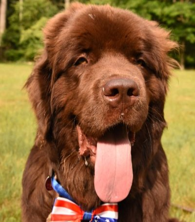
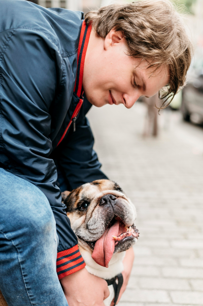

The GOODNESS
A student at Hero’s Elementary was able to raise $4,000 to help homeless people in the community. The student, Dave, a fifth grader, expressed a desire to help others from a young age. He did not allow his young age to stop him. Instead, he worked all summer doing odd jobs to earn money. Dave sold lemonade and offered to clean cars. Through his hard work and the generosity of neighbors, he was able to raise enough money to support people in need. This endeavor took him six months, but throughout the process he never became discouraged. Such a young boy, Dave is truly a hero in our community.
GOOD NEWS OF THE WEEK!
A friendly golden retriever has become the “president” of the University of Mary Washington. The dog, named Simba, receive the popular vote by the student by a landslide. Simba spent 20 days in full campaign, the students were able to spend 2 hours a day for 20 days, he offered button with his face on it. Simba is known for greeting students at the entrance each morning a few hours a weeks he would go to the university library and comfort the the student who are stressed with school. The professors promoted Simba and his campaign and with all of the publicity he won by a landslide.

The Noise: Poetry Conner
The Noise. As my eyes scanned around the room, it looked the same as every other time I sat at this place. There was an ordering station to my left where a cashier stood taking the order of a student; next to the register was a glass case holding cookies, brownies, and scones, and on her left was another case holding cookies and muffins.
"The rest of the space was dim, the light faded, and the voices hushed"

Man’s Best Friend
There is no feeling like returning home to a cute dog. Over the years, scientists have spoken about the positive effects dogs have on humans. The unconditional love of a dog is unlike any other love. This is something Sammy can relate to when he returned home from training and found his dog jumping up and down, excited to see him. The joyful welcome melted away any emotions he was feeling before that very moment. There is nothing like a dog—truly a man’s best friend.
